自动化测试框架大总结（二）
Appium
简介
Appium是一个开源的自动化测试工具，其支持iOS和安卓平台上的原生的，基于移动浏览器的，混合的应用。
Appium 理念
Appium是基于以下的四个理念设计来满足移动平台测试自动化的要求的：
- 您不应该因为需要自动化测试您的应用而不得不以任何形式去重新编译或者修改你的app
- 您不应该把自己固定在一门特定的语言和一个特定的框架上去实现和运行你的测试
- 当说到测试自动化APIs的时候，一个移动测试框架不应该做“重新发明轮子”的事情，
- 一个移动测试自动化框架应该是开源的，无论是在精神上，实际上，还是名义上！
使用Appium进行自动化测试有两个好处
Appium在不同平台中使用了标准的自动化APIs，所以在跨平台时，不需要重新编译或者修改自己的应用。
Appium支持Selenium WebDriver支持的所有语言，如java、Object-C、JavaScript、Php、Python、Ruby、C#、Clojure，或者Perl语言，更可以使用Selenium WebDriver的Api。Appium支持任何一种测试框架.Appium实现了真正的跨平台自动化测试。（本文主要介绍Python的用法）
Appium架构
Appium 是一个用Node.js编写的HTTP server，它创建、并管理多个 WebDriver sessions 来和不同平台交互，如 iOS ，Android等等.
Appium 开始一个测试后，就会在被测设备（手机）上启动一个 server ，监听来自 Appium server的指令. 每种平台像 iOS 和Android都有不同的运行、和交互方式。所以Appium会用某个桩程序“侵入”该平台，并接受指令，来完成测试用例的运行。
安装
appium下载地址：Appium: Mobile App Automation Made Awesome.
python安装库
pip install Appium-Python-Client前置条件
- 搭建java环境，这里不再赘述
- 搭建Android环境，sdk下载地址：http://developer.android.com/sdk/index.html，国内的sdk tools下载地址：http://www.androiddevtools.cn/
- 安装node.js：https://nodejs.org/en/
下载并安装完毕后，打开appium，点击Edit Configurations按钮，设置安卓根目录和java根目录。
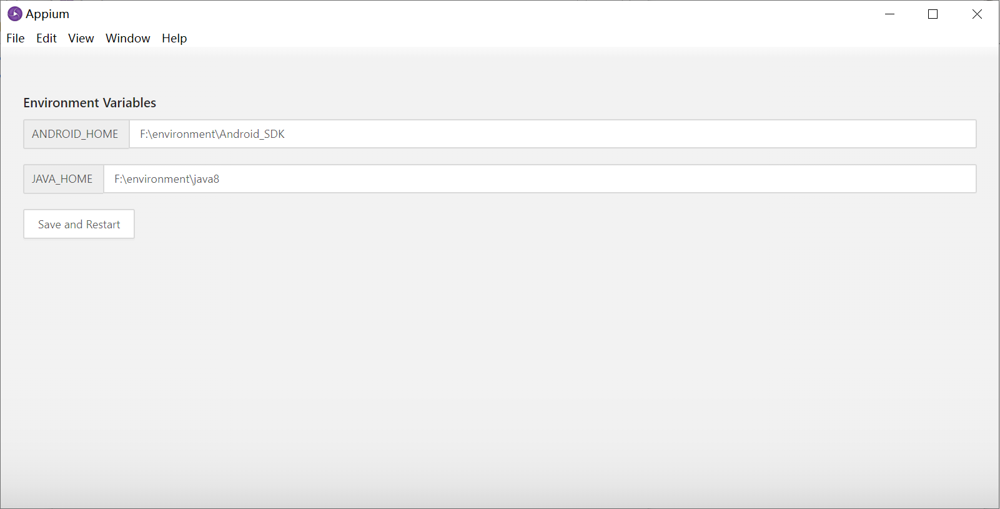
初始化
首先在本机开启appium服务器，ip不变，端口号为4723
引入appium
from appium import webdriver输入启动参数，这里只是连接对应的安卓手机
desired_caps = {}
desired_caps['platformName'] = 'Android'
desired_caps['deviceName'] = 'UUID'具体的参数，地址：【appium】appium自动化入门之基本参数完整版（67个appium基本参数和关键字）_Chaqian的博客-CSDN博客_appium参数
开启appium的session连接
driver = webdriver.Remote("http://localhost:4723/wd/hub",desired_caps)注意：http://localhost:4723/wd/hub这里的wd/hub不能多/，否则报错
测试连接，开启淘宝app
driver.activate_app("com.taobao.taobao")apk操作
打开app
# 打开淘宝
driver.activate_app("com.taobao.taobao")查看打开的app的包名有3种办法
第一种
cmd中输入命令：adb shell am monitor
然后启动需要获取包名的应用
第二种
cmd中输入命令：adb shell pm list packages -3
查看自己安装的app包名
第三种
下载雷电模拟器的包名类名查看器，找到app后直接点击复制包名（方便快捷）
下载地址：包名类名查看器电脑版下载包名类名查看器PC版下载雷电安卓模拟器 (ldmnq.com)
停止应用运行
以网易云音乐为例
stop_app("com.netease.cloudmusic")安装/卸载应用
# 安装应用
driver.install_app("D:\demo\tutorial-blackjack-release-signed.apk")
# 卸载应用
driver.remove_app("com.netease.cloudmusic")元素获取
首先引入AppiumBy
from selenium.webdriver.common.by import By这里用find_element接口，通过by和value寻找数值
driver.find_element(by=By.XPATH,value = "//android.widget.FrameLayout[@content-desc=\"消息\"]/android.widget.ImageView")by的参数，可以通过AppiumBy去获取，常用的分别有：
By.XPATHBy.NAMEBy.IDBy.CLASS_NAMEBy.LINK_TEXT
模拟操作
首先引入TouchAction
from appium.webdriver.common.touch_action import TouchAction普通的点击
driver.find_element(by=AppiumBy.XPATH,value = "//android.widget.FrameLayout[@content-desc=\"消息\"]/android.widget.ImageView").click()手指轻敲屏幕操作
# 通过元素定位方式敲击屏幕
el = driver.find_element(by=AppiumBy.XPATH,value = "//*[contains(@text,'WLAN')]")
TouchAction(driver).tap(el).perform()
#perform()方法发送命令到服务器执行操作
# 通过坐标方式敲击屏幕，元素坐标:x=149,y=324
TouchAction(driver).tap(x=149,y=324).perform()手指按下和释放操作
# 通过元素定位方式按下屏幕
el = driver.find_element(by=AppiumBy.XPATH,value = "//*[contains(@text,'WLAN')]")
TouchAction(driver).press(el).release().perform()
#通过坐标的方式，元素坐标x=149,y=324
TouchAction(driver).press(147,324).release().perform()手指长按操作
el =driver.find_element_by_id("android:id/title")
# 通过元素定位方式长按元素
TouchAction(driver).long_press(el,duration=5000).release().perform()
# 通过坐标方式长按元素，WiredSSID坐标:x=770,y=667
# wait(5000)等待五秒
# 添加等待(有长按X效果)／不添加等待(无长按效果)
TouchAction(driver).long_press(x=770,y=667,duration=5000).release().perform()滑动
driver.swipe(start_x,start_y,end_x,end_y)元素等待
引入WebDriverWait和expected_conditions
from selenium.webdriver.support.wait import WebDriverWait
from selenium.webdriver.support import expected_conditions as EC实例：
WebDriverWait(driver,timeout=10).until(EC.element_to_be_clickable(el),message="找到元素啦")WebDriverWait与until、expected_conditions联合判别元素是否存在，API如下：
title_is: 判断当前页面的title是否精确等于预期title_contains: 判断当前页面的title是否包含预期字符串presence_of_element_located: 判断某个元素是否被加到了dom树里，并不代表该元素一定可见visibility_of_element_located: 判断某个元素是否可见.可见代表元素非隐藏，并且元素的宽和高都不等于0visibility_of: 跟上面的方法做一样的事情，只是上面的方法要传入locator，这个方法直接传定位到的element就好了presence_of_all_elements_located: 判断是否至少有1个元素存在于dom树中。举个例子，如果页面上有n个元素的class都是’column-md-3’，那么只要有1个元素存在，这个方法就返回Truetext_to_be_present_in_element: 判断某个元素中的text是否包含了预期的字符串text_to_be_present_in_element_value: 判断某个元素中的value属性是否包含了预期的字符串frame_to_be_available_and_switch_to_it: 判断该frame是否可以switch进去，如果可以的话，返回True并且switch进去，否则返回Falseinvisibility_of_element_located: 判断某个元素中是否不存在于dom树或不可见element_to_be_clickable: 判断某个元素中是否可见并且是enable的，这样的话才叫clickablestaleness_of: 等某个元素从dom树中移除，注意，这个方法也是返回True或Falseelement_to_be_selected: 判断某个元素是否被选中了,一般用在下拉列表element_selection_state_to_be: 判断某个元素的选中状态是否符合预期element_located_selection_state_to_be: 跟上面的方法作用一样，只是上面的方法传入定位到的element，而这个方法传入locatoralert_is_present: 判断页面上是否存在alert
uiautomator2
简介
uiautomator2是一个可以使用 Python 对 Android 设备进行 UI 自动化的库。其底层基于Google uiautomator，Google 提供的uiautomator库可以获取屏幕上任意一个 APP 的任意一个控件属性，并对其进行任意操作，目前仅支持 android 平台的原生应用测试。
uiautomator2有如下特点：
功能丰富 ：设备和开发机可以脱离数据线，可通过 WiFi 互联；
得心应手 ：集成了 openstf/minicap 加快截图速度 , 集成了 openstf/minitouch 达到精确实时控制设备 , 修复了 xiaocong/uiautomator 经常性退出的问题；
深度整合 ：代码进行了重构和精简，方便维护；
安装
pip install --pre -U uiautomator2weditor安装
作者的python版本为3.8，安装最新的weditor会失败，所以需要指定weditor的版本
pip install weditor==0.6.4运行
python -m weditor使用参考：干货分享|APP自动化测试抓元素利器——weditor - 知乎 (zhihu.com)
连接设备
设备环境调控
手机链接pc，输入adb命令adb devices发现设备后表明设备已连接成功
pc终端输入命令，以安装atx-agent至手机，命令如下：
python -m uiautomator2 init初始化
通过adb devices获取设备的UUID，然后输进参数即可
import uiautomator2 as u2 //依赖包
d = u2.connect('9568940ECCBB')API
运行应用
d.app_start("com.xueqiu.android")停止应用
d.app_stop("com.xueqiu.android")点击
分长按和点击两种，如下：
# 通过text点击
d(text="Settings").click()
# 长按有Settings文本的元素
d(text="Settings").long_click()
# 点击坐标（相对坐标，适应不同分辨率）
w,h = d1.window_size()
d.click(0.5*w, 0.5*h)ui2支持 android 中 UiSelector 类中的所有定位方式（也就是d后面括号的形参）可以进该网站查询：UiSelector | Android Developers (google.cn)，列举如下：
| 名称 | 描述 |
|---|---|
| text | 指定text文本的元素 |
| textContains | text中包含有指定文本的元素 |
| textMatches | text符合指定正则的元素 |
| textStartsWith | text以指定文本开头的元素 |
| className | 指定类名的元素 |
| classNameMatches | className类名符合指定正则的元素 |
| description | 指定description文本的元素 |
| descriptionContains | description中包含有指定文本的元素 |
| descriptionMatches | description符合指定正则的元素 |
| descriptionStartsWith | description以指定文本开头的元素 |
| checkable | 可检查的元素，参数为True或False |
| checked | 已选中的元素，通常用于复选框，参数为True或False |
| clickable | 可点击的元素，参数为True或False |
| longClickable | 可长按的元素，参数为True或False |
| scrollable | 可滚动的元素，参数为True或False |
| enabled | 已激活的元素，参数为True或False |
| focusable | 可聚焦的元素，参数为True或False |
| focused | 获得了焦点的元素，参数为True或False |
| selected | 当前选中的元素，参数为True或False |
| packageName | 指定包名的元素 |
| packageNameMatches | packageName为符合正则的元素 |
| resourceId | 为指定resourceId的元素 |
| resourceIdMatches | resourceId为符合指定正则的元素 |
| index | 元素索引 |
滑动
w,h = d.window_size()
d.swipe(0.1*w,0.5*h,0.8*w,0.5*h) # 从(0.1,0.5)滑动到(0.8,0.5)
d.swipe_ext("up", 0.5) # 向上滑动0.5，可以为up、down、left和right元素等待
# 等待元素的出现
d(text="Settings").wait(timeout=10.0)
# 等待元素消失，返回True False,timout默认为全局设置的等待时间
d(text='Settings').wait_gone(timeout=20)发送文本
d(text="Settings").set_text("你好")输入法切换
# 切换成ui2的输入法，这里会隐藏掉系统原本的输入法,默认是使用系统输入法
# 当传入False时会使用系统默认输入法，默认为Fasle
d.set_fastinput_ime(True)
# 查看当前输入法
d.current_ime()
#返回值
('com.github.uiautomator/.FastInputIME', True)截图
d.screenshot('test.png')录屏
进行录屏之前，需要安装如下库：
pip install -U "uiautomator2[image]" -i https://pypi.doubanio.com/simple开始录屏
d.screenrecord('./test.mp4')结束录屏
d.screenrecord.stop()执行shell命令
d.shell("dumpsys wifi | grep mWifiInfo") # 检查wifi网络状态
d.shell("svc wifi disable") # 关闭wifi
d.shell("svc wifi enable") # 开启wifi
d.shell("svc data disable") # 关闭数据网络
d.shell("svc data enable") # 开启数据网络与Airtest合作
因为uiautomator2的图像识别比Airtest差，可以用Airtest弥补这个缺陷，Airtest与uiautomator2并未冲突，这两个框架可以同时启动。
from airtest.core.api import *
import uiautomator2 as u2
dev = connect_device("Android://127.0.0.1:5037/xxxxx")
d = u2.connect('xxxxx')
d.app_start("com.taobao.taobao")
touch(Template(r"taobao.png"))Auto.js
官网/文档：
简介
Auto.js是Android上不需要Root权限的JavaScript自动化软件，基于JavaScript的面向自动化、工作流、小工具、小应用的代码开发平台。但Auto.js 开源版本已不再维护，原因：Auto.js Pro (autojs.org)，后续将只维护Auto.js Pro专业版，Auto.js Pro自2017年1月诞生以来，已从1.0版本发展到最新的9.0版本。
Auto.js使用JavaScript作为脚本语言，目前使用Rhino 1.7.7.2作为脚本引擎，支持ES5与部分ES6特性。
- 因为Auto.js是基于JavaScript的，学习Auto.js的API之前建议先学习JavaScript的基本语法和内置对象，可以使用教程前面的两个JavaScript教程链接来学习。
- 如果您想要使用TypeScript来开发，目前已经有开发者公布了一个可以把使用TypeScript进行Auto.js开发的工具，参见Auto.js DevTools。
- 如果想要在电脑而不是手机上开发Auto.js，可以使用VS Code以及相应的Auto.js插件使得在电脑上编辑的脚本能推送到手机运行，参见Auto.js-VSCode-Extension。
基于Auto，Auto.js Pro的新特性有：
- 基于特征匹配的全分辨率找图API
- 内置OCR插件，支持速度极快的MLKitOCR和准确率较高的PaddleOCR，支持打包
- 高强度Node.js加密，目前未被破解
- 全新VSCode插件，自动发现设备、自动连接，直接打开手机上文件夹编辑和调试，无需额外同步和拷贝（开发中，预计9.3版本上线）
- VS Code调试，用VS Code单步执行脚本、查看变量、暂停和继续等
- 基于Node.js引擎的全新API，效率提升一个数量级，连接npm、Android、Java的生态
- Vue/React等前端框架支持，无需用Android控件编写即可编写优美界面
- 编辑器增强，基于Language Server Protocol自动补全，多Tab工作区编辑，完美手机端调试体验
- 代码与插件商店，上千代码提供学习，插件支持打包后免安装
- 代码与插件商店，上千代码提供学习，插件支持打包后免安装
- 布局调试功能，可以保存当前布局，在Auto.js Pro打开保存的布局任意查阅，和执行选择器代码验证想法（开发中）
- 悬浮窗调试，可以用悬浮窗控制脚本的单步执行、查看变量、暂停和继续等
- VS Code插件支持截屏手机，获取布局等，未来还将支持取色工具
- 可视化UI设计，轻松搭建你的UI界面
- 极大提升了找色、多点找色速度，支持透明背景图片找图
- 打包支持自定义签名、混淆组件、自定义架构、自定义权限、自定义启动图、体积优化等等
- 使用Shizuku在电脑激活后，没有root也可以使用部分需要root权限的命令，包括坐标点击等
- AES/RSA等加密，MD5/SHA等消息摘要，以及base64编码支持
- 支持zip模块，可以解压和压缩文件，支持带密码
- 获取已安装的应用、获取apk文件的信息，WebSocket、数据库API的支持
- 允许代码中调整稳定模式、前台服务、Root权限开启无障碍、音量上键关闭脚本等开关（包括打包后应用）
- 全权限（指的是在Manifest声明了所有权限，但是Auto.js Pro本身不主动申请）
第一个DEMO
点击+，点击文件
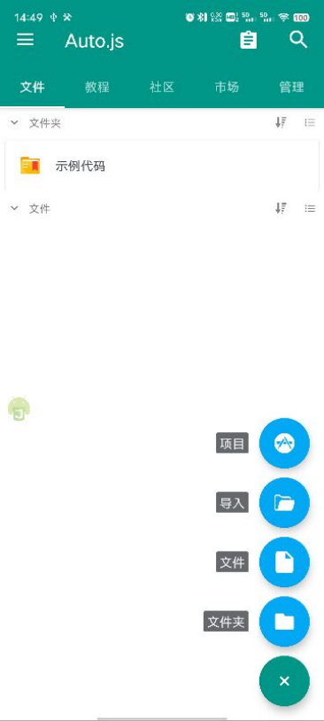
输入文件名，点击确定新建脚本成功
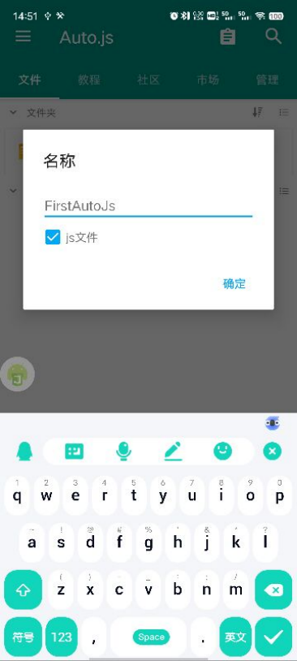
输入以下代码：
launch("com.taobao.taobao");
alert("helloworld");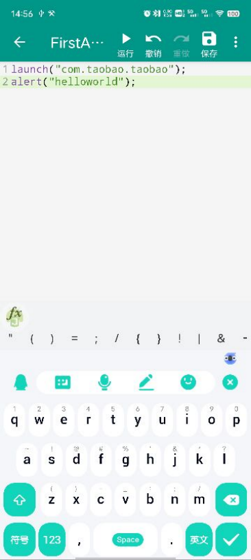
点击保存后运行，会打开淘宝，退出淘宝后，在auto.js中会弹出helloworld字样
API
启动应用
var packaga_name = "com.taobao.taobao"
launch(packaga_name);Auto.js似乎没有给出关闭应用的API
坐标点击
// 点击一次，坐标(x,y)
click(x, y);
// 长按，坐标(x,y)
longClick(x, y);
// 模拟按住坐标(x,y), 并返回是否成功。duration单位为毫秒，如果时长超过500毫秒，则认为是长按。
press(x, y, duration);滑动
// 模拟从坐标(x1, y1)滑动到坐标(x2, y2)，并返回是否成功。duration为滑动时长，单位毫秒
swipe(x1, y1, x2, y2, duration);控件点击
Auto.js的控件可以通过悬浮球中查看，首先点击悬浮球，并且点击蓝色的图标
点击布局范围分析，随机生成很多绿框，点击目标的布局，然后点击查看控件信息
控件信息中的属性基本可作为选择器调用
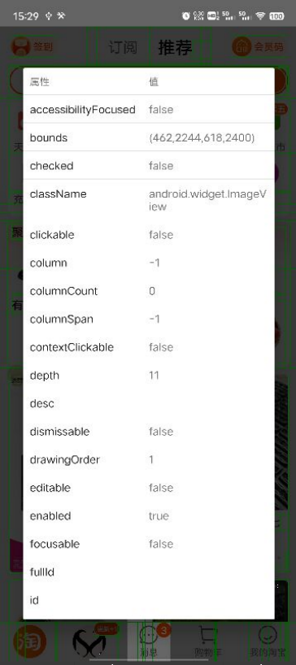
如果想要点击消息，假设查看到控件信息中的属性desc的值为”消息”，那么可以这样调用：
desc("EditText").findOne().click();其他同理，想要退出绿框只需要点击返回键即可
控件可调用的操作为：
click()点击。点击一个控件，前提是这个控件的clickable属性为truelongClick()长按。长按一个控件，前提是这个控件的longClickable属性为truesetText()设置文本，用于编辑框控件设置文本。scrollForward(),scrollBackward()滑动。滑动一个控件(列表等), 前提是这个控件的scrollable属性为trueexits()判断控件是否存在waitFor()等待控件出现
有时候只靠一个属性并不能唯一确定一个控件，这时需要通过属性的组合来完成定位，例如className("ImageView").depth(10).findOne().click()，通过链式调用来组合条件。
示例：
className("EditText").findOne().setText("helloworld");
text("发送").findOne().clicK();内置函数
sleep(n)；暂停运行n毫秒的时间。1秒等于1000毫秒。
//暂停5毫秒
sleep(5000);toast(message)；以气泡显示信息。停顿的时间取决于安卓系统，一般2s
toast("helloworld");uiautomation
简介
uiautomation是yinkaisheng业余时间开发的供其自己使用的一个模块，uiautomation封装了微软UIAutomation API，支持自动化Win32，MFC，WPF，Modern UI(Metro UI), Qt, IE, Firefox等UI框架，最新版uiautomation2.0目前只支持Python 3版本，依赖comtypes和typing这两个包，但不要使用3.7.6和3.8.1这两个版本，comtypes在这两个版本中不能正常工作。
uiautomation支持在Windows XP SP3或更高版本的Windows桌面系统上运行。如果是Windows XP系统，请确保系统目录有这个文件：UIAutomationCore.dll。如果没有，需要安装补丁 KB971513 才能支持UIAutomtion.在Windows 7或更高版本Windows系统上使用uiautomation时，要以管理员权限运行Python,否则uiautomation运行时很多函数可能会执行失败或抛出异常。或者先以管理员权限运行cmd.exe，在cmd中再调用Python。
安装
pip install uiautomationWindows端元素定位工具及控件类型（backend）的判断
所有的工具下载链接：GitHub - blackrosezy/gui-inspect-tool: Gui Inspect tool for Windows
控件类型（backend）的判断
由于一个界面中有很多种控件类型，所以在automation中不同的控件类型对应着不同的控件类
可使用Inspect工具判断backend适合写哪种。首先根据上面的链接下载工具，然后打开Inspect.exe
点击inspect左上角的下拉列表中切换到UI Automation
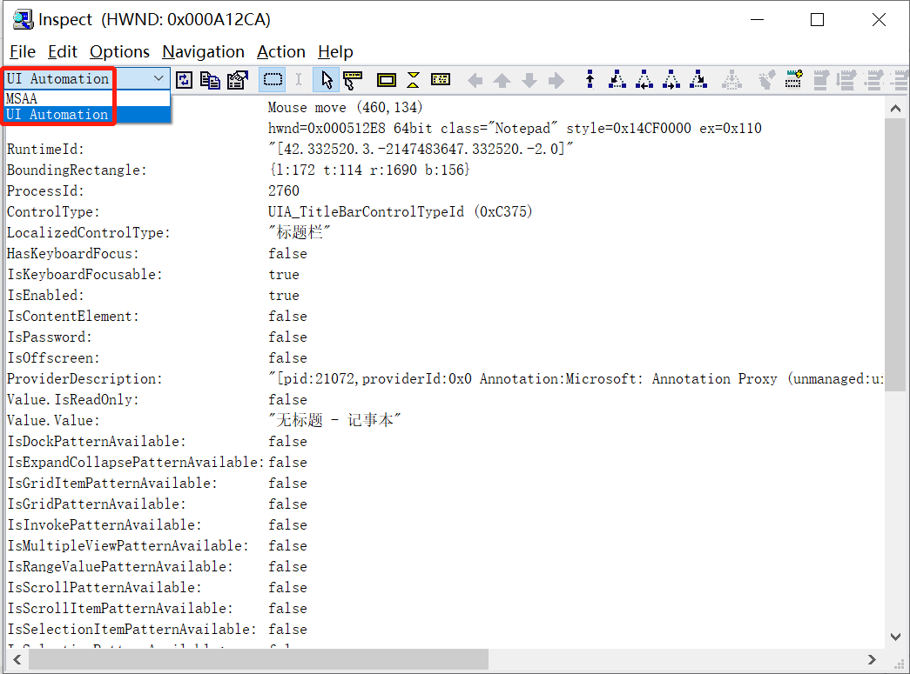
鼠标点一下需要测试的程序窗体，inspect就会显示相关信息。
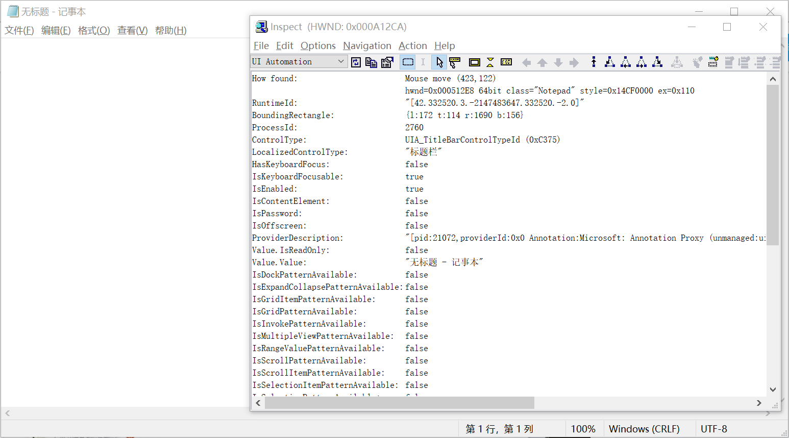
找到ControlType，若类型以UIA开头，则说明backend为uia。
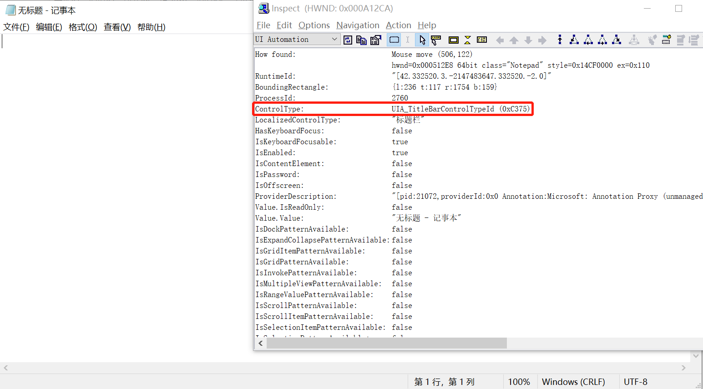
Windows端元素定位工具介绍
使用UISpy或SPY++（文件名为：SPYXX），spy++显示的很全，各种窗口都能够展示出来，看着十分多非常乱，相比来讲 uispy就比较简洁实用了，只展示主要的窗口，节目很整洁很清晰。
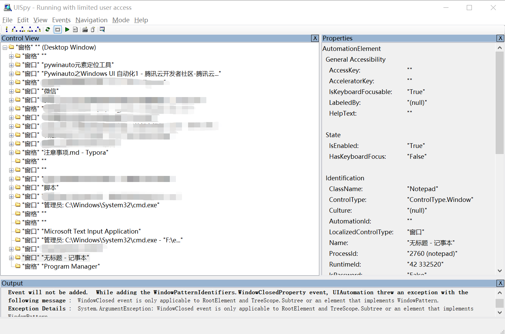
Demo
打开记事本，输入test uiautomation后全选删除，并关闭程序
import uiautomation as auto
import subprocess,os
# 打开程序
subprocess.Popen('NotePad.exe')
# 找到文本框
editor = auto.EditControl(Name="文本编辑器",ClassName="Edit")
editor.Click() # 点击
editor.SendKeys("test uiautomation") # 发送test uiautomation
editor.SendKeys("{Ctrl}a") # 全选
editor.SendKeys("{Delete}") # 删除
# 杀死进程
os.system("taskkill /IM NotePad.exe /F")程序的打开与关闭
在进行自动化测试的时候，需要打开某项Windows程序，这个时候就用到了subprocess，方法如下：
import subprocess
# 打开程序，filepath为程序所在文件路径
subprocess.Popen('filepath')关闭某项程序，可以直接杀死进程
import os
#杀死程序进程
os.popen('taskkill /IM xxx.exe /F')引入uiautomation
import uiautomation as auto元素定位
automation支持如下的控件类：
- Control: 控制类型父类
- WindowControl: 窗口控件类
- PaneControl: 窗格控件类型
- ButtonControl: 按钮控制类型
- CheckBoxControl: 复选框控件类型
- ComboBoxControl: 组合框控件类型
- EditControl: 编辑控件类型
- ListControl: 列表控件类型
- ListItemControl: ListItem 控件类型
- MenuControl: 菜单控制类型
- MenuBarControl: 菜单栏控件类型
- MenuItemControl: 菜单项控件类型
- ScrollBarControl: 滚动条控件类型
- SliderControl: 滑块控制类型
- TabControl: 选项卡控件类型
- TabItemControl: TabItem 控件类型
- TableControl: 表控件类型
- TextControl: 文本控件类型
- TitleBarControl: 标题栏控件类型
- ToolBarControl: 工具栏控件类型
- ToolTipControl: 工具提示控件类型
- TreeControl: 树控件类型
- TreeItemControl: 树项控件类型
- AppBarControlAppBar: 控件类型
- CalendarControl: 日历控件类型
- DataGridControl: 数据网格控件类型
- GroupControl: 群控类型
- HeaderControl: 标题控件类型
- HeaderItemControl: HeaderItem: 控件类型
- HyperlinkControl: 超链接控制类型
- ImageControl: 图像控制类型
- DataItemControl: 数据项控件类型
- DocumentControl: 文件控制类型
- ProgressBarControl: ProgressBar: 控件类型
- RadioButtonControl: 单选按钮控件类型
- SemanticZoomControl: SemanticZoom控制类型
- SeparatorControl: 分离器控制类型
- SpinnerControl: 微调控制类型
- SplitButtonControl: 拆分按钮控件类型
- StatusBarControl: 状态栏控件类型
- ThumbControl: 拇指控制类型
控件类支持的参数（xxxControl内的形参）：
- searchFromControl: 从哪个控件开始查找，如果为None，从根节点Desktop开始查找
- searchDepth: 搜索深度
- searchInterval: 搜索间隔
- foundIndex: 搜索到的满足搜索条件的控件索引，索引从1开始
- Name: 控件名字
- SubName: 控件部分名字
- RegexName: 使用re.match匹配符合正则表达式的名字，Name,SubName,RegexName只能使用一个，不能同时使用
- ClassName: 类名字
- AutomationId: 控件AutomationId
- ControlType: 控件类型
- Depth: 控件相对于searchFromControl的精确深度
- Compare: 自定义比较函数function(control: Control, depth: int)->bool
searchDepth和Depth的区别：
searchDepth在指定的深度范围内（包括1~searchDepth层中的所有子孙控件）搜索第一个满足搜索条件的控件
Depth只在Depth所在的深度（如果Depth>1，排除1~searchDepth-1层中的所有子孙控件）搜索第一个满足搜索条件的控件
在代码中是这样实现的：
editor = auto.EditControl(Name="文本编辑器",ClassName="Edit")
editor.Click() # 点击也不排除会有组合框的出现，组合框的用法为：
# 查找下拉框
comboBox=ComboBoxControl(searchFromControl="xxx",AutomationId="xxx")
# 点击组合框
comboBox.click()
# 选择需要的选项；
comboBox.Select(“xxxx”)
# 展开
comboBox.Expand()
# 折叠
comboBox.Collapse()窗口方法
# 查找窗口中的程序;
window = WindowContrl(searchDepth="xxxx",ClassName="xxxx",SubName="xxxx")
# 激活窗口;
window.SetActive()
# 窗口置顶;
window.SetTopMost()
# 窗口居中
window.MoveToCenter()
# 判断此窗口是否存在;
window.Exists(maxSearchSeconds)
# 关闭窗口；
window.GetWindowPattern().Close()
# 窗口最大化；
window.ShowWindow(uiautomation.ShowWindow.Maximize)
# 窗口最大化；
window.Maximize()
# 截图；
window.CaptureToImage(‘Notepad.png’)
# 切换窗口
window.SwitchToThisWindow()
# 打开控制台(调用的是automation类)
auto.GetConsoleWindow()
# 显示桌面(调用的是automation类)
auto.ShowDesktop()滚动条滚动
#滚动滚动条，直到文本在窗口可见为止
ScrollIntoView()鼠标事件
# 找到元素
x = auto.xxxxControl(Name="文本编辑器",ClassName="Edit")
#单击
x.Click()
#双击
x.DoubleClick()
#右键点击
x.RighClik()
#移动
x.MoveTo()
# 按压左鼠标
x.PressMouse()
#释放左鼠标
x.ReleaseMouse()
#按压右鼠标
x.RightPressMouse()
#释放右鼠标
x.RightReleaseMouse()键盘事件
SendKeys实际上是模拟用户在操作键盘，就是按下某个键盘上的按钮
# 找到元素
x = auto.xxxxControl(Name="文本编辑器",ClassName="Edit")
x.SendKeys("text") # 输入text
x.SendKeys("{Ctrl}a") # 组合键ctrl+a关于组合键的使用，具体如下：
| 值 | 按键说明 |
|---|---|
| {Ctrl}a | Ctrl+a |
| {Delete} | Delete |
| {Ctrl}v | Ctrl+v |
| {Ctrl}s | Ctrl+s |
| {Ctrl}{Shift}s | Ctrl+Shift+s |
| {Win}e | Win+e |
| {PageDown} | PageDown |
| 0-9、a-z、A-Z、’ ’ = [ ] / \ \ ，. 等 | 字符键 |
| {Back} | 删除 |
| {Clear} | 清除 |
| {Enter} | 回车 |
| {Alt} | Alt |
| {Space} | 空格 |
| {F1} | F1 |
| {BROWSER_BACK} | 浏览器后退 |
| {BROWSER_FORWARD} | 浏览器前进 |
| {BROWSER_REFRESH} | 浏览器刷新 |
等待
# 显示等待
window.SendKeys('{Ctrl}c', waitTime = 0.1)
#隐式等待
uiautomation.uiautomation.TIME_OUT_SECOND = 10日志
uiautomation.Logger.ColorfullyWrite('运行"<Color=Cyan>automation.py -h</Color>"显示帮助\n\n')获取剪切板的文本
GetClipboardText()复制或者剪切用SendKeys()解决
控件判断
#判断控件存在
auto.Exists()
#设置一个时间内查找到控件
auto.WaitForExist()
#重新查找控件
auto.Refind()
#判断控件是否消失
auto.Disappears()
#判断控件是否可用
element.IsEnabled控件矩形坐标
rect = control.BoundingRectangle
BoundingRectangle#return rect.left, rect.top, rect.right, rect.bottom
rect.width() #宽度
rect.height()#高度截图
CaptureToImage()Pytest
Pytest是python的一种单元测试框架，主要有如下特点：
- 简单灵活，容易上手
- 支持参数化
- 能够支持简单的单元测试和复杂的功能测试，还可以用来做selenium/appnium等自动化测试、接口自动化测试（pytest+requests）
- pytest具有很多第三方插件，并且可以自定义扩展，比较好用的如pytest-selenium（集成selenium）、pytest-html（完美html测试报告生成）、pytest-rerunfailures（失败case重复执行）、pytest-xdist（多CPU分发）等
- 测试用例的skip和xfail处理
- 可以很好的和jenkins集成
- report框架——allure 也支持了pytest
安装
pip install pytest验证安装是否成功，并查看pytest版本
pytest -V第一个pytest程序
首先了解pytest的运行规则：
- 查找当前目录及其子目录下以test开头或者结尾的py文件
- 找到文件后，在文件中找到以test_开头方法并执行。
import pytest
class TestPytest:
"""
测试类
"""
def test_print(self):
"""
测试方法
"""
print("helloworld")使用IDE运行（python tests for xxx）后返回：
Launching pytest with arguments TestPytest.py --no-header --no-summary -q in xxxxxx
============================= test session starts =============================
collecting ... collected 1 item
TestPytest.py::TestPytest::test_print PASSED [100%]helloworld
============================== 1 passed in 0.01s ==============================注意，若代码中出现异常，则不会执行测试
运行模式
pytest的运行是使用命令行运行的，运行结构为：
pytest [options] [file_or_dir] [file_or_dir] [...]常用参数：
| 参数 | 作用 |
|---|---|
| -V | 查看pytest版本 |
| -h | 查看pytest的命令 |
| -s | 运行过程中执行print打印函数 |
| -x | 用例运行失败则立即停止执行 |
| —maxfail=2 | 失败2次后停止运行，2代表2次，可修改 |
| -v/-q | 打印用例执行的详细/简略过程 |
| -k | 使用表达式指定希望执行的测试用例 |
| -m | 标记测试并分组 |
| —collect-only | 展示在给定配置下哪些用例被运行 |
直接运行py文件中所有test_方法，默认从上到下（根据代码编写的顺序）运行程序，使用mark标记更改运行的程序@pytest.mark.run(order=3)
pytest test.py当某个py文件中存在多个类时，想要运行其中某个类
pytest test.py::TestOne运行py文件中某个类的某个方法
pytest test.py::TestOne::test_one运行多个py文件
pytest test01.py test02.pypytest.main()
pytest 运行用例的时候，一般用命令行去执行，pytest.main()可以以调用python类的方式去执行pytest
在使用方法前，import pytest
例子1：
pytest.main(["test.py"])等价于
pytest test.py例子2：
pytest.main(["test.py::Test::test01"])等价于
pytest test.py::Test::test01例子3：
pytest.main(["-s","case/test.py::Test::test01"])等价于
pytest -s case/test.py::Test::test01例子4：
pytest.main(["-s","--maxfail=2","case/test.py::Test::test01"])等价于
pytest -s --maxfail=2 case/test.py::Test::test01fixture
用途
- 做测试前后的初始化设置，如测试数据准备，链接数据库，打开浏览器等这些操作都可以使用fixture来实现
- 测试用例的前置条件可以使用fixture实现
- 支持经典的xunit fixture ，像unittest使用的setup和teardown
- fixture可以实现unittest不能实现的功能，比如unittest中的测试用例和测试用例之间是无法传递参数和数据的，但是fixture却可以解决这个问题
定义
通过@pytest.fixture()装饰器装饰一个函数，标记该函数是一个fixture
import pytest
@pytest.fixture()
def fixtureFunc():
return 'fixtureFunc'
def test_fixture(fixtureFunc):
print('我调用了{}'.format(fixtureFunc))
if __name__=='__main__':
pytest.main(['-v', 'test_fixture.py'])运行后，pytest调用test_fixture方法前会调用fixtureFunc方法。
作用范围
fixture包含一个叫scope（作用范围）的可选参数，用于控制fixture执行和销毁逻辑的频率。@pytest.fixture()的scope参数有4个值：function、class、module、session，默认为：function。
function
函数级别的的fixture每个测试方法只需要运行一次。
配置代码（@pytest.fixture()部分）在调用方法（test_xxxx部分）之前运行，销毁代码在调用方法之后运行。
由于是默认，在定义一章中已演示完毕
也可以在调用方法的时候提供多个fixture，在执行fixture时会根据形参的顺序执行，例如：
import pytest
class A:
@pytest.fixture()
def fixtureFunc01(self):
return 'fixtureFunc01'
@pytest.fixture()
def fixtureFunc02(self):
return 'fixtureFunc02'
def test_case01(fixtureFunc01,fixtureFunc02):
print(f"先调用{fixtureFunc01}，后调用{fixtureFunc02}")
if __name__=='__main__':
pytest.main(['-s', 'test_fixture.py::A'])class
类级别的fixture的每个测试类只需要运行一次，无论测试类中有多少类方法都可以共享这个fixture。
import pytest
class A:
@pytest.fixture(scope="class")
def fixtureFunc(self):
return 'fixtureFunc'
def test_case01(fixtureFunc):
print('我调用了{}'.format(fixtureFunc))
def test_case02(fixtureFunc):
print('我调用了{}'.format(fixtureFunc))
if __name__=='__main__':
pytest.main(['-s', 'test_fixture.py::A'])module
模块级别的fixture每个模块只需要运行一次，无论模块里面有多少个测试函数、类方法或其他fixture都可以共享这个fixture。
import pytest
@pytest.fixture(scope="module")
def fixtureFunc(self):
return 'fixtureFunc'
def test_case(fixtureFunc):
print('我调用了{}'.format(fixtureFunc))
class A:
def test_case01(fixtureFunc):
print('我调用了{}'.format(fixtureFunc))
def test_case02(fixtureFunc):
print('我调用了{}'.format(fixtureFunc))
if __name__=='__main__':
pytest.main(['-s', 'test_fixture.py'])session
会话级别的fixture每次会话只需要运行一次，一次pytest会话中的所有测试函数、方法都可以共享这个fixture。
常用插件
pytest-repeat
用于重复执行某个用例
安装
pip install pytest-repeat重复执行
输入命令
pytest -s --count=2 Test01.py::TestA::test_case01 # 运行两次Test01.py中的TestA类中的test_case01方法也可以与-x结合使用，重复执行直到失败后停下来
pytest -x --count=100 Test01.py::TestA::test_case01 # 运行100次Test01.py中的TestA类中的test_case01方法，直到失败如果要在代码中将某些测试用例标记为执行重复n次，可以使用@pytest.mark.repeat(n)，例如：
@pytest.mark.repeat(5)
def test_case01(self):
print("执行用例")编辑完毕后执行命令pytest -s Test01.py::TestA::test_case01，可以看到重复执行了多次
Allure
Allure 框架是一种灵活的、轻量级、支持多语言测试报告工具，它不仅能够以简洁的 Web 报告形式显示已测试的内容，而且允许参与开发过程的每个人从测试的日常执行中提取最大限度的有用信息。同时支持多种语言包括 Java、Python、JavaScript、Ruby、Groovy、PHP、.Net、 Scala。
安装
首先安装allure-pytest
pip install allure-pytest之后，下载allure命令行工具
首先进入官网，往下滑动找到Download字样，也可以进入github
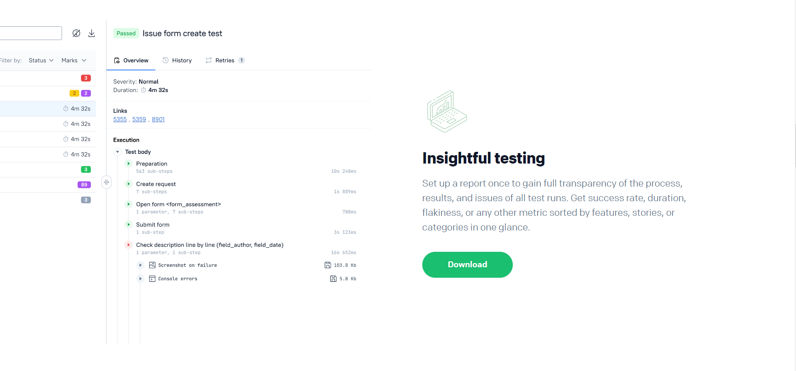
进入github后，点击releases，然后下载allure-xxx.zip
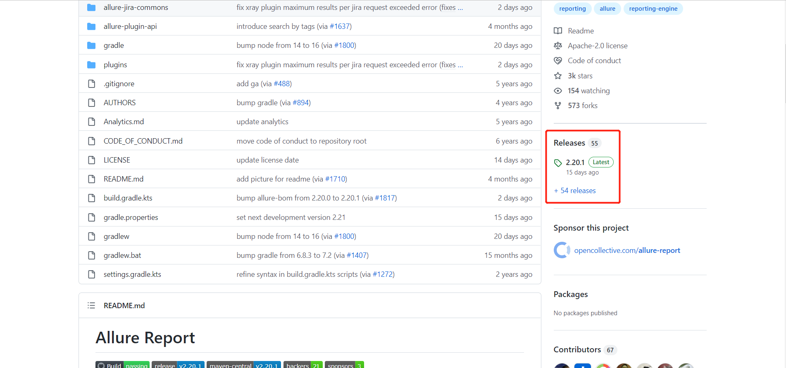
解压，配置环境变量，为：
%allure_home%\bin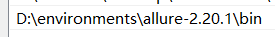
进入命令行，输入allure --version检查是否配置成功，若配置环境变量输入该命令行无效，则尝试重启电脑
demo
参考：pytest文档29-allure-pytest(最新最全，保证能搞成功！) - 腾讯云开发者社区-腾讯云 (tencent.com)
编辑代码：
import allure
import pytest
@pytest.fixture(scope="session")
def login():
print("用例先登录")
@allure.step("步骤1:点xxx")
def step_1():
print("111")
@allure.step("步骤2:点xxx")
def step_2():
print("222")
@allure.feature("编辑页面")
class TestEditPage():
'''编辑页面'''
@allure.story("这是一个xxx的用例")
def test_1(self, login):
'''用例描述：先登录，再去执行xxx'''
step_1()
step_2()
print("xxx")
@allure.story("打开a页面")
def test_2(self, login):
'''用例描述：先登录，再去执行yyy'''
print("yyy")使用以下命令执行用例：
pytest -s --alluredir ./report Test01.py执行完成后，在当前目录下，report目录会生成原始文件，这个只是测试报告的原始文件，不能打开成html的报告
在当前目录下（若命令行不在则cd到该目录），执行命令启动服务：
allure serve report/完毕后弹出默认浏览器，命令行会出现以下文字：
Generating report to temp directory...
Report successfully generated to C:\Users\Bell\AppData\Local\Temp\17675750725245119916\allure-report
Starting web server...
2022-11-23 16:17:23.425:INFO::main: Logging initialized @2366ms to org.eclipse.jetty.util.log.StdErrLog
Server started at <http://192.168.3.136:2512/>. Press <Ctrl+C> to exit在浏览器中切换中文：
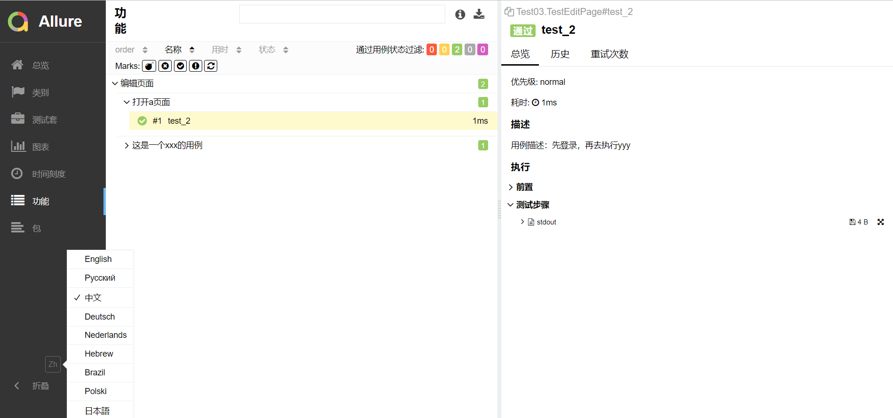
查看报告：
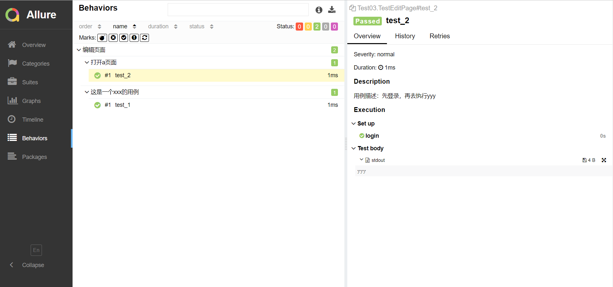
Allure注解说明
| 使用方法 | 参数值 | 参数说明 |
|---|---|---|
| @allure.epic() | epic描述 | 敏捷里面的概念，定义史诗，往下是feature |
| @allure.feature() | 模块名称 | 功能点的描述，往下是story |
| @allure.story() | 用户故事 | 用户故事，往下是title |
| @allure.title(用例的标题) | 用例的标题 | 重命名html报告名称 |
| @allure.testcase() | 测试用例的链接地址 | 对应功能测试用例系统里面的case |
| @allure.issue() | 缺陷 | 对应缺陷管理系统里面的链接 |
| @allure.description() | 用例描述 | 测试用例的描述 |
| @allure.step() | 操作步骤 | 测试用例的步骤 |
| @allure.severity() | 用例等级 | blocker,critical,normal,minor,trivial |
| @allure.link() | 链接 | 定义一个链接，在测试报告展现 |
| @allure.attachment() | 附件 | 报告添加附件 |
本博客所有文章除特别声明外，均采用 CC BY-SA 4.0 协议 ，转载请注明出处！